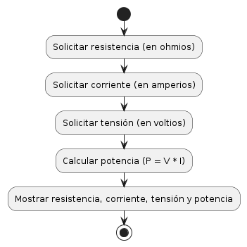

Parámetros Básicos de un Circuito Eléctrico
Teoría
Los circuitos eléctricos son sistemas que permiten el flujo de corriente eléctrica a través de diferentes componentes, como resistencias, condensadores, inductores y fuentes de alimentación. Los parámetros básicos de un circuito eléctrico incluyen la resistencia, la corriente, la tensión y la potencia.
Los parámetros básicos de un circuito eléctrico incluyen la resistencia, la corriente, la tensión y la potencia.
- Resistencia (R): Medida en ohmios (\( \Omega \)).
- Corriente (I): Medida en amperios (A).
- Tensión (V): Medida en voltios (V).
- Potencia (P): Medida en vatios (W).
diagrama de flujo
Programa en C para Calcular los Parámetros Básicos
A continuación se muestra un programa en C que calcula los parámetros básicos de un circuito eléctrico:
#include <stdio.h>
int main() {
float resistencia, corriente, tension, potencia;
// Lectura de los valores de resistencia, corriente y tensión
printf("Ingrese el valor de la resistencia (en ohmios): ");
scanf("%f", &resistencia);
printf("Ingrese el valor de la corriente (en amperios): ");
scanf("%f", &corriente);
printf("Ingrese el valor de la tensión (en voltios): ");
scanf("%f", &tension);
// Cálculo de la potencia
potencia = tension * corriente;
// Impresión de los resultados
printf("\nResultados:\n");
printf("Resistencia: %.2f ohmios\n", resistencia);
printf("Corriente: %.2f amperios\n", corriente);
printf("Tensión: %.2f voltios\n", tension);
printf("Potencia: %.2f vatios\n", potencia);
return 0;
}